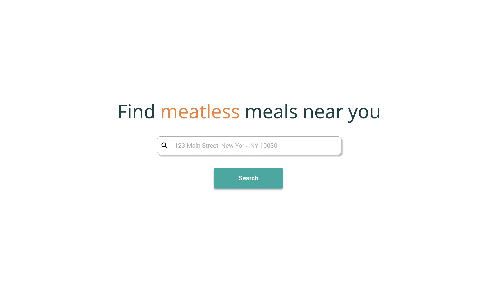

Hi!
I'm Carolyn. I like making things, taking naps, and petting cats.
I'm interested in the open ocean, clean tech, human-centered design, learning new things, and getting better at explaining new things.
Projects
I took time off school in spring 2021 to learn how to build things. What I'm most proud of :
Meatless
A native app to help people who want to eat less meat find meatless dishes near them. It was my first time building a scraper, working with MongoDB, playing around with ML models, and using Flutter.
Empower
A hackathon project that enables Asian Americans to report incidents and request help for everyday tasks. It was meant to serve as a tool to enhance safety and connectivity in communities.
Coral Generator
A quick build inspired by Blue Planet II (voiced by David Attenborough). It generates cute coral seascapes for use as wallpapers/zoom backgrounds.
Pomodoer
My first-ever hack: a tool to help students studying together remotely stay productive. Although not much got done during the hackathon itself, I was so invested in the idea that I completed it on my own afterwards.
Crafts
I'm constantly crafting! What I've been up to recently :
Baking
Sweets keep me going! My favorite recipes :